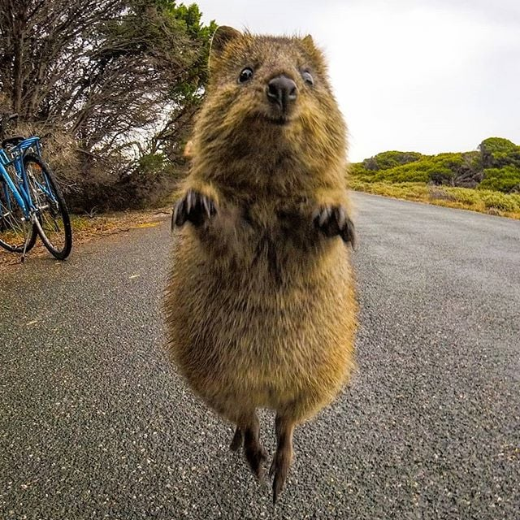

Quokka còn được biết đến là loài vật hạnh phúc nhất thế giới
Loài Quokkas cùng họ với Kangaroo (còn được gọi là Macropodidae)
Cũng như dòng họ nhà mình, loài Quokkas sống trên một số hòn đảo nhỏ của nước Úc như đảo Rottnest và đảo Bald.
Quokka có thể sống đến 10 năm, nó ăn cỏ là chủ yếu và sống về đêm. Bạn có thể đến Tây Úc để ngắm nhìn độ vui vẻ, lạc quan của con vật này vì chúng khá thân thiện
Con vật nhỏ nhắn này bản tính hiền lành và cởi mở
Họ hàng nhà chuột này có bộ lông khá dày và mềm mại, có màu nâu xám
Mặc dù không bự con như tổ tiên Kangaroo nhưng Quokka cũng có điểm chung theo họ hàng là loài chuột có túi. Nó nuôi con nhỏ trong chiếc túi bé tí của mình. Dù giao phối cũng nhiều nhưng mỗi năm Quokka chỉ đẻ thành công một lứa
